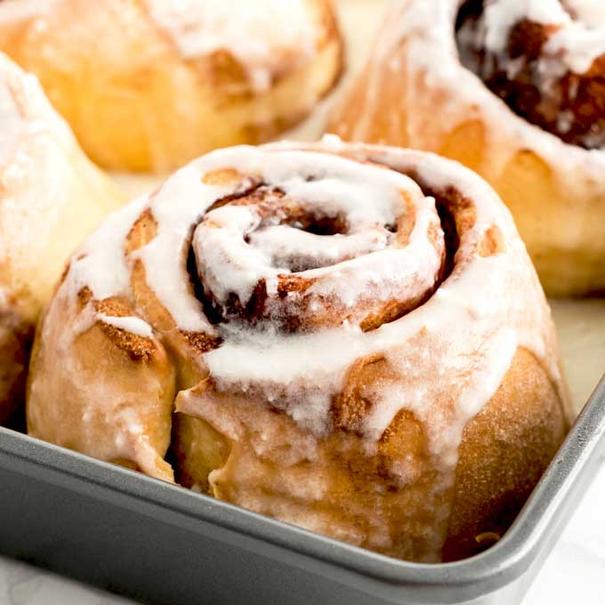

Cinnamon Rolls

Description
Delicious cinnamon rolls with icing that drips off deliciously
Instructions
- Use basic dough
- Roll dough into rectangle 1/4 inch thick. Spread with soft margarine. Sprinkle with sugar, cinnamon, and chopped nuts.
- Beginning at long side of rectangle, roll up tightly. Cut roll in 1-inch slices. Place on greased cookie sheet. Cover
and let rise until double in bulk. Bake 25 to 30 minutes at 375 degrees. Remove from oven and glaze while warm, if desired.
- Make 3 dozen
Hint: Use powdered sugar and milk to make glaze. Use just enough milk added to powdered sugar to make a thin paste. Dip hot doughnuts
in paste, or spoon glaze over cooked doughnuts.
Back to top
Back to homepage